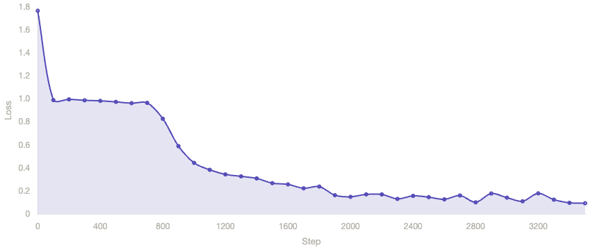
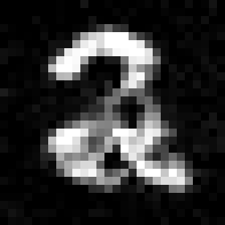
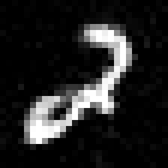
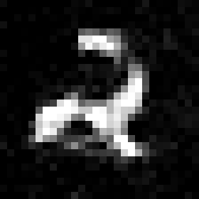
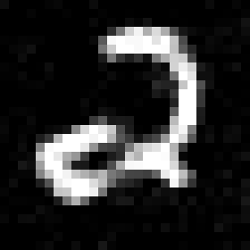
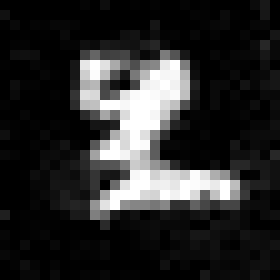
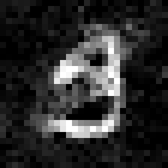
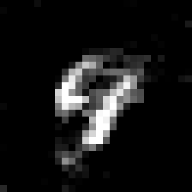
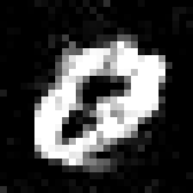

Just for fun :)
I got bored studying for finals, so I decided to build a diffusion image generation model completely from scratch in C++ using the MNIST dataset :P
At a high level, I first implemented the DDPM training pipeline itself.
For training, I sample a random timestep $t$, corrupt a clean MNIST image $x_0$ into $x_t$ with Gaussian noise according to $xₜ = \sqrt{ᾱₜ} · x₀ + \sqrt{(1-ᾱₜ)} · ε$, and train a neural network to predict the noise that was added. At sampling time, the model starts from pure noise and iteratively denoises it step by step to generate a digit image.
The harder part was building the predictive backbone from scratch. Since most modern diffusion models use a U-Net, I initially tried simpler alternatives that were more realistic to implement fully in C++.
My first attempt was a standard multilayer perceptron trained with SGD, but it quickly plateaued and mostly failed to learn meaningful noise prediction. I then implemented Adam to see whether the issue was optimization rather than architecture, but the pure MLP still struggled.
After that, I experimented with a lateralized MLP design, where separate row-wise and column-wise MLPs processed spatial structure before their outputs were merged by a larger joint network. That approach was more structured than the plain MLP, but it still did not produce strong results.
The breakthrough came when I switched to a convolutional architecture. I implemented a small CNN from scratch with two 3x3 convolution layers followed by a fully connected prediction head, along with backpropagation and Adam optimization. The final model takes the noisy image and timestep information as input, predicts the added noise, and uses that estimate during reverse diffusion sampling. This version performed far better than the fully connected baselines and brought training loss down to roughly 0.1, producing noticeably better generations.

Here are some of the cool image results that were generated. The first time I ran the diffusion, I isolated the training to just images with the label 2, making the generation a lot higher quality.





Then, seeing that the isolated 2 test worked pretty well, I tried training the model on the full dataset:



What I like most about this project is that it forced me to build every layer of the system myself: the diffusion process, sampling loop, neural network layers, convolution operations, backpropagation, and optimizer. It ended up being a much deeper dive into generative modeling than I expected, and it gave me a much better understanding of how diffusion models actually work under the hood.
Note, this project is still ongoing, I plan to explore classifier-based guidance next so stay tuned!